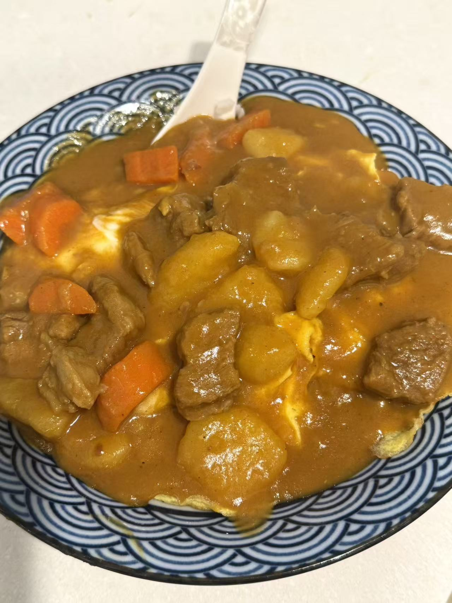

Yuechen's Curry, Explained
For this week's assignment, I interviewed Yuechen about her creative
process of coming up with the recipe of and making her signature dish,
spicy curry.

The Beginning: Trying Different Types of Curry
Yuechen started her creative process by trying different types of curry.
After trying out different kinds of curry, including Indian curries and
the curry that her friend made, she could not find a good curry dish
that perfectly matched her taste. So she decided to come up with her own
recipe with her favorite elements and ingredients.
- Spicy flavor
- Beef
- Fresh potatoes
- Carrots
Second Step: Experiment
After identifying her ideal ingredients, Yuechen began to experiment
with different combinations and cooking techniques to perfect her
recipe. She tried to make use of the ingredients, condiments, and spices
that she already had in the fridge. With her experience and intuition in
cooking, she was able to refine her recipe and create a perfect spicy
beef curry.
Final: The Recipe
Below is the step-by-step guide to making Yuechen's signature spicy beef
curry:
The recipe is for 3 servings.
Ingredients:
- Beef, cut into small pieces
- ½ onion, diced
- ½ green onion, diced, plus extra for blanching the beef
- 2 cloves garlic, minced
- A few slices of ginger
- Cooking wine
- Dried chilies
- Star anise (八角)
- Bay leaves (香葉)
- A small piece of butter
- 1 block Japanese curry roux
- 3 tbsp Buldak hot chicken sauce (火雞麵醬), plus more to taste
- Hot water
- Vegetables of your choice, such as potatoes and carrots
- A small cup of milk
- 1 piece dark chocolate
- Salt, to taste
Instructions:
-
Prepare the beef.
Thaw the beef and cut it into small pieces.
-
Blanch the beef.
Put the beef in a pot ith green onion, sliced ginger, and a splash of
cooking wine. Add water and bring to a boil, cooking until the blood
and impurities rise to the surface (焯血水).
-
Rinse the beef.
Remove the beef and rinse it with hot water. Avoid cold water, as it
can make the beef tighten and become tougher.
-
Prepare the aromatics.
Dice ½ onion and ½ green onion. Mince 2 cloves of garlic. Prepare the
dried chilies, star anise, and bay leaves.
-
Sauté the aromatics.
Melt a small piece of butter in a pot. Add the onion, green onion, and
garlic. Stir-fry until softened and fragrant.
-
Add the spices.
Add the dried chilies, star anise, and bay leaves. Stir-fry briefly
until fragrant.
-
Make the curry base.
Add the Japanese curry block and stir until melted. Add about 3
tablespoons of Buldak sauce and mix until everything is evenly
combined.
-
Coat the beef.
Add the beef and stir until every piece is evenly coated with the
curry mixture.
-
Add water and simmer.
Pour in enough hot water to completely cover the beef. Bring to a boil
over high heat, stirring until the curry is fully dissolved. Cover and
reduce to medium-low heat. Simmer for about 30 minutes.
-
Add the vegetables.
Add the vegetables and cook for another 15 minutes, or until the
potatoes are tender enough that you can easily pierce and break them
with a chopstick.
-
Finish the curry.
Add a small cup of milk and a piece of dark chocolate. Stir until
incorporated.
-
Reduce the sauce.
Turn the heat to high and let the curry reduce (收汁) until it reaches
your preferred thickness. Taste as it reduces and add salt as needed.
For extra heat, add more Buldak sauce.
-
Serve.
Remove the star anise and bay leaves. The curry is ready to serve.